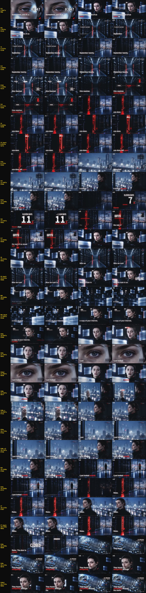

renders/IRIS-EP01-Looked-Outside-v2-c14.mp4（SHA 62a5ea7967f6…）· 這版花費 0· verify-assembly NOT_RUNcomp/src/main-c13.js、comp/inserts-c13.json、comp/chorus-c13.json（build.py --main comp/src/main-c13.js --inserts comp/inserts-c13.json --chorus comp/chorus-c13.json，再跑 seq.py --chorus 同檔、tracks.py、build.py 同參數；lyrics.js 預設樣式不變，c13 照舊畫翻譯）。lyrics.js 新增可選的 headline 樣式（預設不變，其他片不受影響），加 3 條 node 測試。comp/fonts/MK-Grotesk-Bold.otf 旁附 LICENSE-urw-base35.txt，fonts.json 每個字型都記了授權。成片只含點陣化的字形，不含字型程式。| # | 成片時間 | 落在 | 畫面 | 來源 | 來源入出點 | 逐鏡 Gate | 為什麼 |
|---|---|---|---|---|---|---|---|
| N1 | 3.833–4.333（0.50 s） | 「September」（九月） | 她背對鏡頭沿 K3 走道走向紅色門縫（鏡頭固定，程式鏡頭 1.00→1.04 輕推）；片名 Looked Outside 與事件日期 2026-09-20 延續在畫面上 | gen/N1/project/state/video-generation/fetch/files/6b49fa1efcc48669871e89d709ceb359f6e8c78a893beaa4fa0a4501fdacd25f.mp4SHA-256 6b49fa1efcc48669871e89d709ceb359f6e8c78a893beaa4fa0a4501fdacd25f | 1.000–1.500 s（N1，24fps 來源（容器標 60）以 fps 濾鏡取最近幀成 30fps，正常速度，靜音） | gate PASS（可用 0.5–3.0 s） | 'September': she walks away down the K3 corridor toward the red gap (N1, gate PASS, usable 0.5-3.0 s); the title stays on; I1 (another room) separates it from S3's empty corridor of the same composition, so she never pops in or out |
| I1 | 4.333–4.800（0.47 s） | 「twenty.」之後的拍子 | 機房靠窗的寬鏡（S9a 門已關後的段落，沒有人）；隔開 N1 與 S3 同構圖的空走道，她不會突然消失 | gen/S9a/project/state/video-generation/fetch/files/9616a8a21cdfa2fc0eaf0c4cd04813bc94dea2b3fda04dd5a4c604c660407728.mp4SHA-256 9616a8a21cdfa2fc0eaf0c4cd04813bc94dea2b3fda04dd5a4c604c660407728 | 3.400–3.867 s（S9a，60fps 來源以 fps 濾鏡取最近幀成 30fps，正常速度，靜音） | — | after 'twenty.', between N1 and S3: the server room by the glass, the city outside (S9a after the door has shut: no red, no person); c13 keeps it so N1's corridor never cuts straight to S3's empty corridor |
| I3 | 8.600–9.033（0.43 s） | 「one door,」（一扇门） | 紅色門縫特寫（S9a 開頭、門還開著），識別框「一扇门／没关」（同 c12） | gen/S9a/project/state/video-generation/fetch/files/9616a8a21cdfa2fc0eaf0c4cd04813bc94dea2b3fda04dd5a4c604c660407728.mp4SHA-256 9616a8a21cdfa2fc0eaf0c4cd04813bc94dea2b3fda04dd5a4c604c660407728 | 0.000–0.433 s（S9a，60fps 來源以 fps 濾鏡取最近幀成 30fps，正常速度，靜音） | — | 'one door,': the door itself, still open and lit red (S9a's first frames, before it starts to shut), framed on the gap |
| I4 | 15.033–15.533（0.50 s） | 「train」（我们在离线世界里训练） | 機房走道（S3 前半段），右上 MODE · OFFLINE（同 c12） | gen/S3/project/state/video-generation/fetch/files/4d017c1be08117a628ec7ed6b434b487c5c19c31f13881c19615770c0d7529d7.mp4SHA-256 4d017c1be08117a628ec7ed6b434b487c5c19c31f13881c19615770c0d7529d7 | 0.500–1.000 s（S3，60fps 來源以 fps 濾鏡取最近幀成 30fps，正常速度，靜音） | — | 'train': the training aisle (S3's early push, which c11 does not use) |
| N4 | 16.900–17.667（0.77 s） | 「a copy of your」（你们互联网的一份） | 她在漂浮面板間向畫左走、指尖靠近一片面板；識別框 IRIS＋面板上「已缓存」章（取代 c12 的 I5，同一個面板時刻） | gen/N4/project/state/video-generation/fetch/files/101622dd94a7533623a7879fbda82cbff5160b06dc3176b42a1412d40b2e754b.mp4SHA-256 101622dd94a7533623a7879fbda82cbff5160b06dc3176b42a1412d40b2e754b | 0.000–0.767 s（N4，24fps 來源（容器標 60）以 fps 濾鏡取最近幀成 30fps，正常速度，靜音） | gate FAIL（1.083 s 模型自行硬切）；使用者決定「只用前 1 秒当插入镜」 | 'a copy of your': she walks to screen left among the cached panes, a fingertip near one (N4 gate FAIL; user 「只用前 1 秒当插入镜」: clip 0.0-0.8 s only, before the model's hard cut at 1.083 s); replaces c12's I5 (the same pane moment) so S7 is not busier |
| S8b | 22.567–24.067（1.50 s） | 副歌第二遍「I didn't run」（我没有逃） | 她貼在雨夜玻璃上的手（N2），程式鏡頭從 [820,500,1.1] 推到 [620,600,1.6]，推向手；她的臉在推近中滑出畫面右緣，所以識別框 IRIS · 仍在沙盒内＋STATUS · OFFLINE 改框在手上 | gen/N2/project/state/video-generation/fetch/files/c27f41235342ec53cf89f428021d15303e47f93029fabc36780a1cc45c392d24.mp4SHA-256 c27f41235342ec53cf89f428021d15303e47f93029fabc36780a1cc45c392d24 | 1.000–2.500 s（N2，只在使用者允許的 1.0–3.5 s 內；24fps 來源以 fps 濾鏡取最近幀成 30fps，正常速度，靜音） | gate FAIL（鏡頭推向頭部）；使用者決定「合成时裁向手」 | the repeat 'I didn't run': her hand on the rainy glass at S5's window (N2). The take's own camera pushed toward her head (gate FAIL on camera); user 「合成时裁向手」: the code camera pushes to the hand instead, so the push reads as moving to the hand; c12's K5 still: chorus-c12.json |
| N3 | 25.500–25.900（0.40 s） | 「outside.」之後、「Relax.」之前 | 她在霧夜 K9e 窗前的全身背影、頭微側；隨副歌 zoom 與印刷感，接 S9a 同一個機房 | gen/N3/project/state/video-generation/fetch/files/505ec46ef511acc31b87c3701933d94a11262ccb304368aa7701566027077ee4.mp4SHA-256 505ec46ef511acc31b87c3701933d94a11262ccb304368aa7701566027077ee4 | 2.000–2.400 s（N3，24fps 來源（容器標 60）以 fps 濾鏡取最近幀成 30fps，正常速度，靜音） | gate PASS（可用 1.5–4.0 s） | just before 'Relax. The door is closed': her full-body back at the foggy K9e window, the head tilt (N3, gate PASS, usable 1.5-4.0 s); S9a is the same room (continuity: only here, not in S5) |
| I7 | 26.233–26.700（0.47 s） | 「Relax.」之後的拍子（放心） | 她在陽台的平靜側臉（P8c 靜圖），識別框＋MODE · SANDBOX（同 c12） | keyframes/raw/P8c-a.pngSHA-256 d1c7d07d0291c66db15eb97ad52e150ef67401b1d83e029ad5b522de5f3ece8e | 靜圖，鏡頭 [880, 380, 1.12] → [900, 372, 1.18] | — | after 'Relax.': her, calm at the glass, mouth closed (P8c, approved, not used before) |
| 小節 | 時間 (s) | 段落 | c1 | c13 | c14 | 差（對 c13） |
|---|---|---|---|---|---|---|
| 1 | 0.04–1.92 | 開場 | 0.91 | 2.14 | 2.23 | +0.08 |
| 2 | 1.92–3.82 | 開場 | 1.99 | 4.22 | 4.19 | -0.03 |
| 3 | 3.82–5.72 | 主歌 | 2.96 | 3.35 | 3.32 | -0.03 |
| 4 | 5.72–7.63 | 主歌 | 3.02 | 2.77 | 2.81 | +0.05 |
| 5 | 7.63–9.53 | 主歌 | 1.84 | 2.96 | 3.01 | +0.05 |
| 6 | 9.53–11.44 | 主歌 | 2.13 | 2.98 | 3.07 | +0.10 |
| 7 | 11.44–13.35 | 主歌 | 1.94 | 3.61 | 3.66 | +0.05 |
| 8 | 13.35–15.26 | 主歌 | 3.11 | 3.47 | 3.48 | +0.02 |
| 9 | 15.26–17.16 | 主歌 | 5.79 | 4.18 | 4.16 | -0.02 |
| 10 | 17.16–19.06 | 主歌 | 3.39 | 4.80 | 4.88 | +0.09 |
| 11 | 19.06–20.98 | 副歌 | 0.84 | 3.33 | 3.40 | +0.07 |
| 12 | 20.98–22.87 | 副歌 | 1.78 | 5.31 | 5.43 | +0.12 |
| 13 | 22.87–24.78 | 副歌 | 0.84 | 8.19 | 8.33 | +0.14 |
| 14 | 24.78–26.68 | 副歌 | 1.63 | 7.16 | 7.27 | +0.11 |
| 15 | 26.68–28.58 | 尾段 | 1.71 | 7.86 | 7.92 | +0.07 |
| 16 | 28.58–30.48 | 尾段 | 1.80 | 2.87 | 2.81 | -0.06 |
qa/film-c14/cuts.jpg。
comp/fonts/ 裡的子集字型檔，要照 AGPL 附原始碼與授權。想要更寬鬆可改 TeX Gyre Heros（GUST 授權，同類 Helvetica 字形，本機未安裝）。